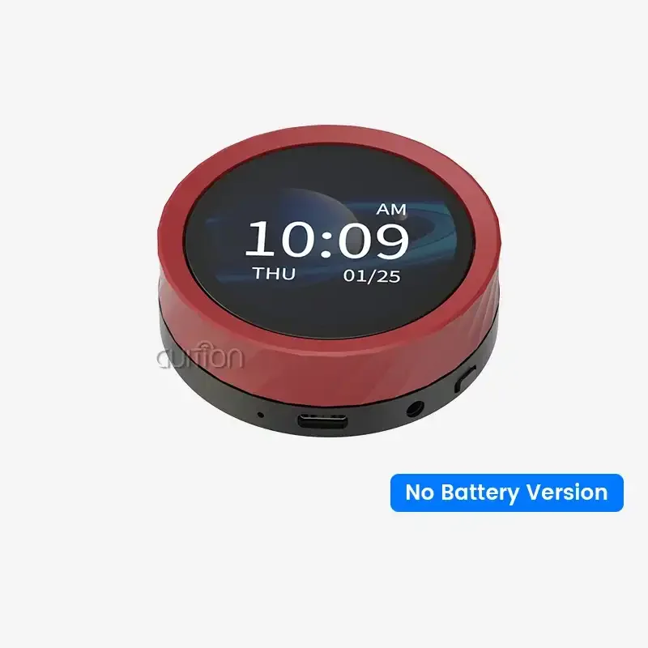

JC3636F118C_I_YR
Guition · ESP32-S31 1.8 inch KNOB display
JC3636F118C_I_YR is an 1.8" 360x360 IPS Capacitive touch ESP32 display board by Guition based on the ESP32-S31.
Features, ports & interfaces
- Capacitive touch
- microSD (TF) card slot
- Wi-Fi 6 – as stated by the vendor
- Bluetooth + Classic
- Speaker output (amplifier on board)
- 2× microphone
- Lithium battery support
- Rotary knob (encoder)
Specifications
| Parameter | Value | Source |
|---|---|---|
| Screen size | 1.8" | |
| Resolution | 360x360 | source |
| Panel | IPS | source |
| Display driver | ST77916 | source |
| Touch | Capacitive | source |
| MCU / SoC | ESP32-S31NRV16 | source |
| MCU family | ESP32-S31 | |
| Wi-Fi | Yes | |
| Bluetooth | Yes | |
| Category | ESP32-S31 Display Module | |
| Active area | 45.68×45.68 mm | source |
| Connectivity | Wi-Fi 6 、 Classic Bluetooth | source |
| Dimensions | 66×66×22 mm | source |
| Expansion / IO | TF Card Interface, Dual Microphones, Speaker Driver, Battery Support | source |
| Memory | 520KB SRAM, 16MB PSRAM, 320KB ROM, 16MB Flash | source |
| Power consumption | Approximately 1.3W | source |
| Vendor | Guition | |
| Viewing angle | >60° | source |
| Operating voltage | 5V | source |
Official links & documentation
Files
Offline copies are available on the interactive page.